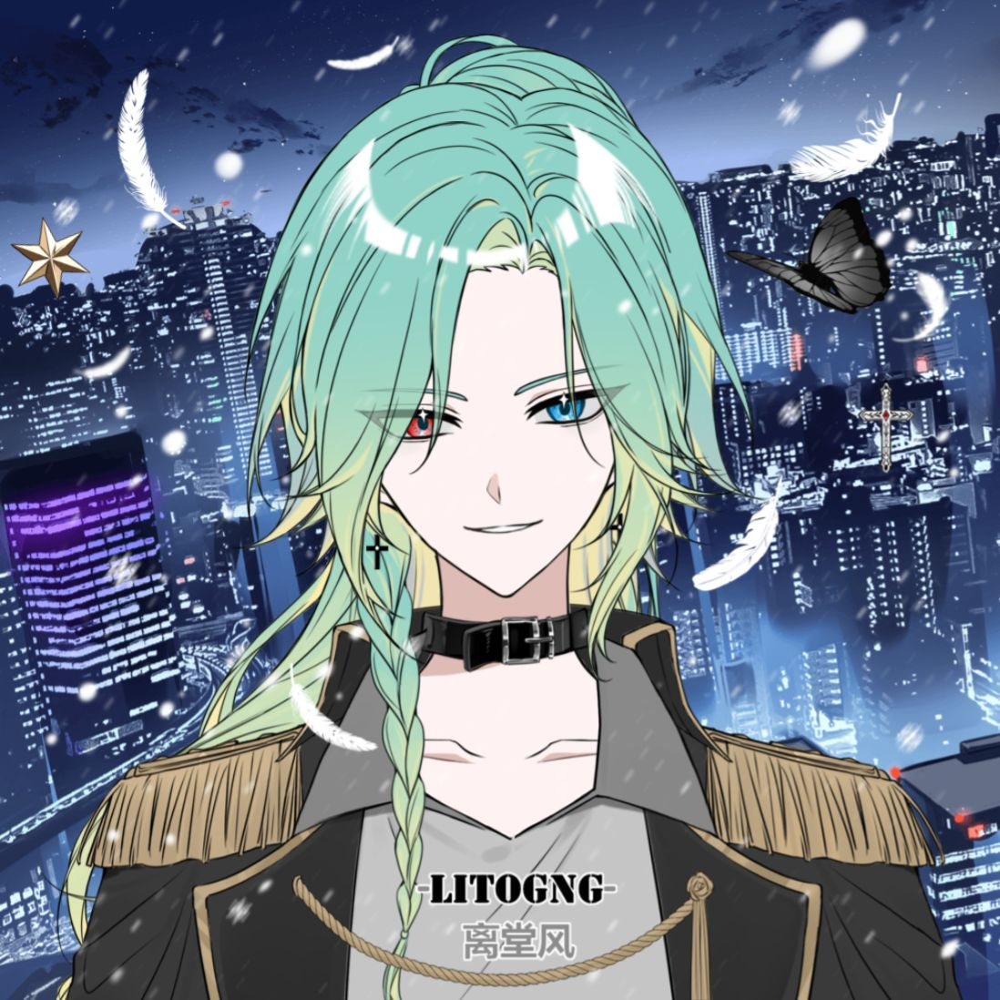

2026年春夏之交，商业圈里的明争暗斗又添新剧情。一边是主打制造业和房地产的老牌企业鼎峰集团，另一边是靠互联网流量快速崛起的阅辉集团——两家公司从2024年起就摩擦不断，进入今年3月后，随着各自22岁的继承人正式走到台前，这场商战更添了几分年轻气盛的味道。
积怨不浅，互不相让
说起来，鼎峰和阅辉的“过节”始于两年前。当时阅辉突然杀入智慧家居赛道，直接抢了鼎峰在智能家电制造上的生意；鼎峰也不甘示弱，随后在自己开发的多个楼盘里，优先选用别家方案，摆明了不给阅辉面子。今年春天矛盾继续升级——3月的一场行业论坛上，阅辉高管公开嘲讽传统企业“只会盖房子不懂科技”；4月初，鼎峰立刻被曝出从阅辉挖走了好几名中层骨干。你来我往，火药味十足。
宋闻溪：稳扎稳打的“厂三代”
作为鼎峰集团CEO宋远山的长子，22岁的宋闻溪自去年实习后，逐渐接手公司事务。他和阅辉的继承人季清越是同届校友，但两人在学校时就不太对付。宋闻溪性格内敛，很少在媒体上露面，上任后把精力都放在了改造鼎峰的老工厂和楼盘项目上——比如给生产线加装自动检测设备、在小区里试点智能停车系统，据说已经帮集团省下了不少成本。内部员工说，宋闻溪不爱说大话，也不爱画大饼、赶潮流，开会时他也重视实际，强调做好眼前事。
季清越：爱出风头的“网二代”
相比之下，阅辉集团创始人季振邦的儿子季清越完全是另一个画风。同样22岁的他，从大学起就是校园里的风云人物，现在更是在社交平台上拥有几十万粉丝，三天两头晒工作照和商业见解。季清越接手阅辉后，主抓直播带货和社区团购等新业务，今年4月他还亲自上阵做了一场带货直播，当晚销售额破千万，赚足了眼球。相较于“商业继承人”的头衔，“红酒、爵士、搞直播”和时常挂在嘴边的“高雅人士”的自称，成了季清越身上更惹人注意的标签。这位年轻的“小季总”，通过对流量的敏锐把控，已经采取了和上一辈“老江湖”完全不同的玩法。

“隔空喊话”成家常便饭
两位年轻继承人的不同做派，也让两家企业的“隔空互怼”变得更有意思。4月中旬，季清越在一次公开活动上笑着说：“有些老企业连App都做不好，还谈什么转型？”大家都听出他在挤兑鼎峰。没过几天，宋闻溪在公司内部讲话时淡淡回了一句：“赚快钱不难，难的是做几十年不垮的生意。”明眼人都知道，这话是说给阅辉听的。两人虽然从未当面交锋，但一来一回的“暗战”已经成了圈内茶余饭后的热门谈资。
最近风向有点变
不过，到了5月中旬，事情似乎有了转机。有小道消息说，宋远山和季振邦上个月在一次晚宴碰面，相谈甚欢，两家公司的中层最近也开始有了私下接触。宋闻溪和季清越更是在上星期的毕业典礼被拍到交谈，虽然当时没聊几句，但比起两人平时在学校的状态来说已经是巨大改善。据知情人士透露，鼎峰手里有大把工厂和楼盘，阅辉有成熟的线上渠道和用户数据，双方如果能在“社区智能化”这类项目上联手，说不定能双赢。截至目前，两家企业都没有正式回应，但不少商业观察人士都在猜测：这两家企业，会不会从此化干戈为玉帛？
22岁，正是不怕输的年纪。一个求稳，一个求快，鼎峰和阅辉接下来的棋怎么走，我们拭目以待。